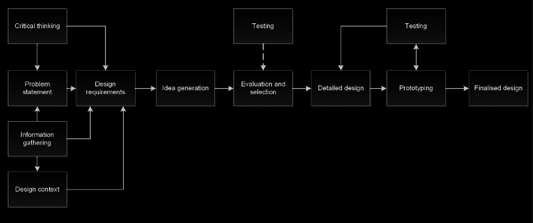

2024 EWB Challenge
EWB Australia in Cambodia, Mondulkiri Province
Overview
- The 2024 EWB Challenge is delivered through live collaboration with EWB Australia’s Engineering team is Cambodia with a focus on Pu
Pu Ngaol in Mondulkiri province
Project Briefs were developed using EWB’s Technology Development Approach, which involved
- Community Workshops
- Interviews with
Pu Ngaol villagers
- Priority issues and Aspirations of the community included themes around:
- Water Supply
- Agriculture
- Education
- Sanitation
- Student design ideas will support EWB’s Engineering team and their work on the ground in Mondulkiri province
The 2024 EWB Challenge is sponsored by RS Group
Program Dates
- Registrations Due: <2024-01-31>
- Semester 1 Reports Due: <2024-07-05>
- Semester 2 Reports Due: <2024-11-01>
- Showcase qualifiers / Finalists announced:
- Semester 1 only - 3rd week of Aug
- Semester 1 + 2 / Sem 2 only - 3rd week of November
- Showcase Event: (1-2 day event), typically on the 1st week of Dec 2024
Available Program Activities
- The EWB Challenge
Design Brief provided (Feb)
- Supporting resources (Feb)
- Introductory workshop for academies (Feb)
- Introductory presentation for students (Mar & Aug)
- Stakeholder online event (Apr & Sep)
- Student access to the EWB (ongoing)
- External review of top student reports (Jul & Nov)
- Opportunity for attendance at the EWB Challenge Series Showcase (Dec)
Program Rules and Eligibility
Visit Program Rules and Eligibility
Submission Recommendations
Submission sample
- Respose to the specific design considerations outlined on the EWB Challenge website
- Evaluation of alternatives
- Details of the conceptual design, analysis and final design
- Identification of schedule and costs
- Identification of how the selected design is appropriate
- Discussion of ethics, long term sustainability and maintenance
- Outline details of any external support provided
- Reflection
Challenge Outlines and Contents
Challenge Outlines
- Executive summary
- Introduction, including the identification of information and selection of design area/project
- Preliminary design requirements
- Preliminary design solution(s)
- Reflection on team work to date
- Plan for delivery of the report at the end of semester, including
Work Breakdown Structure (WBS) and Grantt Chart
Challenge Content

1. Problem Statement
- Problem to address:
- Read document 2023 EWB Challenge Design Brief with Pu Ngaol village in Mondlkin province available on
canvas
- Select your design topics by the end of Week 3
- Design context and information gathering
- Utilise the background information that EWB have gathered
- Available on
EWB website and canvas
DESIGN STATEMENT insert design statment here
2. Design Requirements
- Clear set of project requirements
- Functions, objectives and constrains
- Establish criteria (for evaluation and testing)
- e.g Government regulation, physical
DESIGN REQUIREMENTS TEMPLATE files: [requirement]
2.1 Design Objectives
- Developments of Objective and constraints
- Use the
Design Considerations
files: [objective] [objectives1]
3. Idea Generation
3.1 Ideation
- Ideation (aka. Brainstorm)
- Functional analysis
- Morphological charts (more details on WEEK 4)
Solution Ideation files: [solution]
3.2 Screening
The preliminary screening is used to weed down the multiple design options into slightly fewer options by asking a simple question Does this option meet all of the Design Constraints if the answer is NO, then the design option should be rejected
Multi-Criteria Decision Analysis (MCDA) is suite of tools used in many parts of life to help with decision making, specifically when there is more than one criteria
file: [WSM]